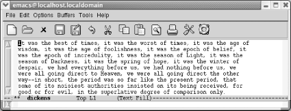
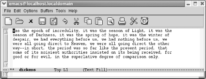
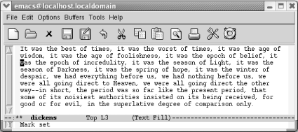

2.2删除文本
在学习删除指令之前，你或许想先知道撤消指令，我们会在本章后面对撤消指令 做全面介绍。输入 C-_ 或者 C-x u 来撤消最近一次的编辑操作，再次执行撤 消指令来撤消上上次操作，依次类推。
Emacs提供许多删除文本的方法，最简单的方法是按 Dle 键，按完之后会立即 删除光标左侧的字符。看一下 Del 键在你的键盘上的位置，有时它被称为 BackSpace 键。 Del 清晰的表述了它的功能:删除前一个字符。如果你在录 入的时候想删除最后一个录入的字符，应该按哪个键呢?应该按在Emacs中称为 Del 的键。
Emacs提供很多种其他的删除指令，或许对你来说太多了，然而你最终会因为某种 原因使用它们中大部分指令。例如: C-d (表示 delete-char )删除光标下的 字符。删除下一个单词的指令是 M-d (表示 kill-word )。再次注意 Meta 键的增强指令的特性: C-d 操作一个字符，而 M-d 操作一个单词。
Emacs具有删除前一个或后一个单词，句子和段落的指令。通过他们的名字你也能 猜出他们在单词间，句子间，段落间的功能。如果光标在一个实体的中间，他们 做的事会有点儿古怪:它们会删除单词，句子或段落的一部分。 向前删除还是向 后删除是由指令自身决定的。例如，下面显示了 M-d 删除时的不同行为，这是 由光标位置决定的。
| 如果光标在这个位置 | M-d的处理结果 |
|---|---|
| It was the w o rst of times. | It was the w_ of times. |
| It was the w orst of times. | It was the_of times. |
| It was the wors t of times. | It was the wors_ of times. |
类似的，如果光标在一个单词的中间，你要删除单词的前半部分，按 M-Del (表示 backward-kill-word )，它会删除当前单词中从光标位置到单词开头的 部分。
如果想删除整行或者一行的一部分，可以用 C-k (表示 kill-line )指令， 这个指令会删除从光标位置到行尾的全部内容。在一个空白行输入 C-k ，会删 除当前的空白行。因此，一般输入两次 C-k 来删除一行内容:一次删除文本内 容，第二次删除前一次产生的空白行。如果想删除从行首到光标位置的内容，可 以输入一个更复杂的指令 Meta - C-k (也就是，按住 Meta 键，再按连字符 - ，再按 C-k )。
也可以使用 C-k 连接两行。在行尾输入 C-k ，会删除换行符，就可以有效 的将两行连接成一个更长的行。
2.2.1杀戮环(The Kill Ring)
你或许已经注意到Emacs中的一些删除指令被称为 杀戮(kill) 指令，例如: kill-region ， kill-word 等等。在Emacs中，删除指令并不致命，事实上 却恰恰相反。被删除的文本不是被永久删除而是被隐藏在被称为 杀戮环(kill ring) 内。尽管杀戮环听起来像个暴力团伙，它仅是一个存储区域用于存储复制 或删除的内容。不要将杀戮环和可以在应用程序之间进行复制粘贴操作的系统剪 切板混淆。我们会在本章后面介绍Emacs如何使用系统剪切板。
你可以输入 C-y (表示 yank )恢复删除的内容。1如果你连续删除了多 行，Emacs会将他们收集到一个单独的单元并将其放入杀戮环，一个简单的指令 C-y 可以方便的将所有东东恢复。在下面的例子中，我们会使用 C-k 四次来 删除两人城市的尾巴 的前两行。(记住，第一个 C-k 删除文本，第二个 C-k 删除空白行)然后我们使用一个 C-y 就可以恢复删除的内容。
| 初始状态: |
|---|
|  |
| 光标在左上角 |
| 输入:C-k C-k C-k C-k |
|---|
|  |
| 你已经用C-k指令删除了前两行 |
| 输入:C-y |
|---|
|  |
| 通过一个指令就恢复了全部内容 |
哪些内容会完整的保存到杀戮环?用 C-k 或者 C-w 指令删除的内容，以及 M-w 复制的内容(这两个指令会马上介绍。)都会保存到杀戮环。被 M-d ， M-del 和其他相关指令删除的单词，句子和段落也会保存进去。此外，你用 C-u Del 或 C-u C-d 删除的内容也会保存。唯一不会保存的就是用 Del 和 C-d 删除的字符(如果你想恢复，可以将此类删除通过撤消指令恢复，快捷 键为 C-_ 和 C-x u 。)
Emacs对哪些内容保存到杀戮环是比较聪明的:当它根据一组删除操作重组一大块 文档时，它一般都能保持文本排版的正确。便即，你输入几次 M-d ，然后输入 几次 M-del ，再穿插输入几次 C-k 。当你输入 C-y ，Emacs会按照原版 恢复文本。
然而，你需要注意的是：当你执行一个非杀戮指令后，Emacs会立即停止组装文本 块。例如：你用 C-k 删除一行，又用 C-d 删除一个字符，再用 C-k 删除 一行，你已经打断了执行顺序。Emacs不认为删除字符指令 C-d 是一个'杀戮' 指令，它只是一个删除操作而且并没有存储它。这种情况下，你没有后成一个连 续的杀戮指令存储区，你生成了两个存储区。后面，我们会介绍如何获取之前'杀 戮'掉的文档。
表2-3 删除，杀戮，还原指令汇总，以及对应的编辑菜单中的选项。
| 快捷键 | 指令名称 | 功能 |
|---|---|---|
| C-d | delete-char | 删除光标下的字符 |
| Del | delete-backward-char | 删除光标前的字符 |
| M-d | kill-word | 删除下一个单词 |
| M-Del | backward-kill-word | 删除前一个单词 |
| C-k | kill-line | 删除一行 |
| M-k | kill-sentence | 删除下一句话 |
| C-x Del | backward-kill-sentence | 删除前一句话 |
| C-y | yank | 还原之前删除的内容 |
| C-w Edit->Cut | kill-region | 删除标记的区域（见下一章） |
| (none) | kill-paragraph | 删除下一段 |
| (none) | backward-kill-paragraph | 删除前一段 |
Footnotes:
1 如果你是一个Linux或者Windows用户，或许已经习惯于在各应用程序中使 用C-v来执行粘贴操作。Emacs有选项可以改变其默认的粘贴，剪切，和复制指 令，重新定义成你熟悉的C-v，C-x和C-c。见'让Emacs按照你的方式工作'，了解 详情。对那些正在学习Emacs的vi使用者提出一个警告:vi也使用术语yank，但是 两处的yank的含义几乎完全相反。别混淆两者的概念。
Date: 2010-11-02 14:56:49
HTML generated by org-mode 6.33x in emacs 23